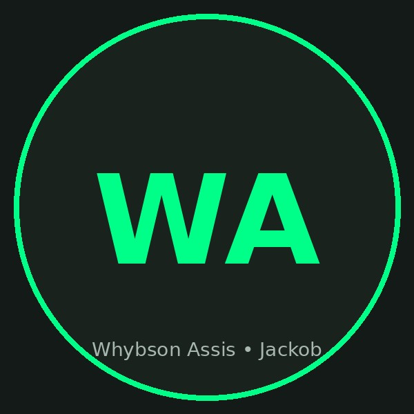

💻 Back-End Node.js | 🔒 Cyber Security / SOC | 🧠 JackobLab
Estudante ADS (UNINASSAU, 2027) — crio sistemas reais em produção com foco em APIs, automação e segurança. Busco estágio/júnior Backend ou SOC.
✅ Todos os projetos abaixo são sistemas funcionais, públicos e disponíveis online — com repositório, deploy e estudo de caso PSR (Problema → Solução → Resultado).

Sou Desenvolvedor Back-End (Node.js/Express, APIs REST, Firebase, SQLite/D1) e estudante de Cibersegurança/SOC (CIA, TCP/IP, Wireshark, análise de logs). Meu laboratório é o JackobLab — onde documento e publico sistemas de ponta a ponta, do requisito ao deploy.
Acredito que tecnologia boa funciona, economiza tempo e é segura. Por isso cada projeto tem regras de negócio claras, autenticação, testes e monitoramento — não apenas telas bonitas.
No tempo livre pratico ciclismo road/off-road: constância, estratégia e progresso contínuo — o mesmo que levo para o código.
Node.js/Express, REST com JWT, validação, SQLite/D1 e Firebase — do design ao deploy
Sistemas como AgendaEstética que resolvem dor real de PMEs (agenda, anti-overbooking, CRM)
Captura com Wireshark, análise de tráfego/logs, testes controlados e hardening básico
Docker, Cloudflare Tunnel/Workers, scripts e monitoramento (JackobLab-OS)
★ Top 3 = cases âncora para vagas Backend e SOC. Todos com estudo de caso PSR.
Plataforma SaaS que elimina o caos do WhatsApp para profissionais de estética. Agenda visual (mensal/semanal/diário), slots exclusivos anti-overbooking, CRM básico e histórico. PWA + Firebase + Functions.
Sistema operacional web para controlar o JackobLab remotamente: Express + Socket.io + SQLite, streaming de IA (OpenCode), terminal, file browser, Git, monitor (CPU/RAM/Docker/Ollama/logs) + réplica edge Hono+D1.
Labs em Kali Linux para formação SOC: captura com Wireshark, TCP/IP/DNS/HTTP, testes controlados (Hydra/Aircrack-ng), parser de logs em Node para detecção de brute-force. Base para SOC Log Analyzer.
Controle de rendas, despesas e cartões com dashboard mensal e lógica inteligente de faturas/parcelas por data de fechamento/vencimento — reflete impacto real no salário.
Transmite tela + áudio do Android para PC via WebRTC P2P. LAN-first, sem nuvem, gravação local .webm. Servidor só faz signaling (SDP/ICE).
Cardápio digital + programa de fidelidade em tempo real. Autenticação e persistência com Firebase.
Aplicação web para controle de operações comerciais — foco em simplicidade para microempreendedores.
App para ciclistas planejarem e organizarem rotas com Maps API e geolocalização.
Controle manual de faturas/despesas — alternativa simplificada ao gerenciador completo.
Landing page de conversão com CTA otimizado e tracking de cliques.
API completa com JWT + bcrypt, Zod, Helmet, paginação e testes. Endpoints /auth e /tasks com SQLite (fallback memória). Testada com Jest + Supertest (3 testes passando).
Busco estágio/júnior em Backend (Node.js) ou SOC/Cyber Security para atuar com APIs, automação e monitoramento — entregando sistemas funcionais e seguros para problemas reais.
Aberto a estágio, júnior, freelas e colaborações. Respondo em até 24h. Vamos discutir como posso ajudar seu time com backend, automação ou SOC.